Solutions Details
Solutions List
Sample Dashboard
Our demo dashboard showcases the key features designed to help you monitor performance, receive timely alerts, analyze data, and make informed, cost-effective decisions. It’s fully integrated, customizable, and built to support smarter energy and operational management.
Below are the core components that enable better visibility, control, and actionable insights:
- Overview Dashboard
- Analysis
- M&V
- Alerts
- Reports
- KPI
- GHG
- Support
Energy Management System
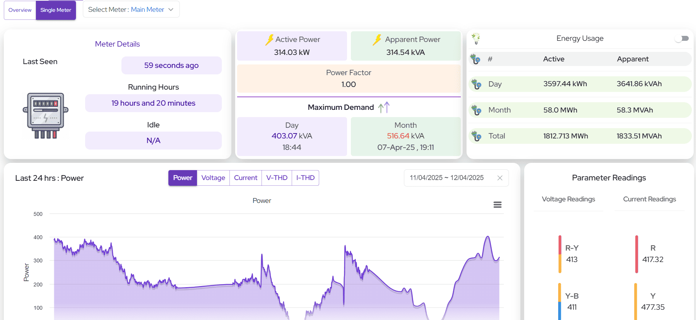Our IoT-powered Energy Management System (EMS) offers a complete overview of your facility’s energy consumption. From real-time insights to automated reporting, EMS helps you monitor, analyze, and optimize energy use efficiently.
- Real-time monitoring of facility-wide energy consumption
- Access historical data and detailed usage trends
- Identify maximum demand periods and consumption patterns
- Compare energy usage across different timeframes and areas
- Set up smart alerts via Email, WhatsApp, or SMS for threshold breaches
- Download comprehensive consumption and facility reports
- Monitor Key Performance Indicators (KPIs) and billing details
- Track Greenhouse Gas (GHG) emissions for sustainability reporting
- Easily integrates with your existing systems and infrastructure
- Dedicated support from energy experts and engineers
Water Flow Monitoring
Our Water Flow Monitoring system delivers real-time visibility into your entire water distribution network. Monitor live water flow rates (kL/hr), track daily and monthly consumption trends, and gain insights into operational performance to support conservation and leak prevention.
- Real-time Water Flow Monitoring (kL/hr)
- Daily & Monthly Water Consumption Reports
- Trend Analysis for Flow Over Time
Water Level Monitoring
Accurately track the status of multiple water storage tanks. Monitor levels in Fresh Water, Raw Water, and Waste Water tanks with capacity percentages, tank statuses, and historical trend analysis.
- Real-time Monitoring of Fresh, Raw, and Waste Water Tanks
- Water Level (%), Status, and Tank Capacity
- Historical Data Analysis for Usage Trends
- Leak Detection and Pressure Drop Indicators
- Visual Indicators: Tank Health and Fill Patterns
- Instant Alerts for Abnormal Levels
Water Quality Monitoring
Ensure compliance with environmental standards through comprehensive quality monitoring. Track water parameters aligned with MPCB standards, receive alerts for deviations, and generate detailed reports for regulatory or internal review.
- Temperature, pH Level, and Water Flow
- Dissolved Oxygen (DO) and Total Dissolved Solids (TDS)
- Total Suspended Solids (TSS)
- Bio-Chemical Oxygen Demand (BOD)
- Chemical Oxygen Demand (COD)
- Standards aligned with MPCB regulations
- Real-time alerts via Email, WhatsApp, or SMS for all parameters
- Detailed historical reports and downloadable trend logs
- Fully integrated with building management and environmental systems
DG Management System
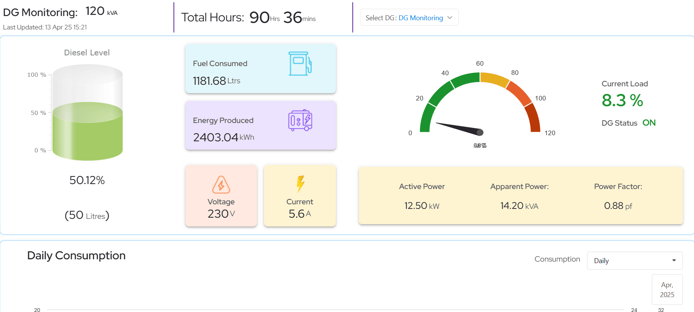Efficiently manage diesel usage, monitor tank levels, and prevent fuel theft with our advanced Diesel Management System (DMS). Designed for reliability and transparency, our DMS offers real-time insights into your diesel generator operations and fuel efficiency.
- Live tracking of diesel tank levels in real-time
- Instant alerts for suspected fuel theft or abnormal consumption
- Detailed reports on diesel usage and energy performance
- Monitor key operational metrics:
- Comprehensive DG Log with:
- Start and End Time
- Operational Duration
- Energy Generated
- Fuel Consumed
- Specific Fuel Consumption (SFC)
- Downloadable reports for compliance, audits, and internal analysis
- Integrated alerts via Email, WhatsApp, or SMS for real-time updates
- Seamless integration with your existing energy and utility systems
Temperature Humidity Monitoring
Maintain a healthy environment by monitoring indoor and outdoor air quality with our advanced Air Quality Monitoring System. Get real-time insights into pollutants, temperature, humidity, and stay alerted with smart threshold-based notifications.
Temperature & Humidity Monitoring: Ensure optimal comfort and environmental conditions by tracking temperature and humidity levels in real-time, helping maintain ideal working or living spaces.
- Temperature
- Humidity
Indoor Air Quality System

Indoor Air Quality Monitoring: Monitor the internal air conditions of your facility including gases and pollutants that affect health and comfort. Identify potential indoor pollution sources and take preventive action.
- Temperature
- Humidity
- Carbon Dioxide
- Formaldehyde
- Total Volatile Organic Compounds
Outdoor Air Quality
Outdoor Air Quality Monitoring: Get comprehensive insights into ambient air conditions with live AQI tracking. Understand pollution levels caused by vehicular emissions, industrial activity, and environmental factors to make smarter decisions for safety and compliance.
- AQI Level
- AQI Status
- Particulate Matter (PM2.5)
- Particulate Matter (PM10)
- Carbon Dioxide (CO 2)
- Sulfur Dioxide (SO 2)
- Nitrogen Dioxide (NO 2)
- Ozone (O 3)
Hooter Control and Alerts
Hooter Alerts & Threshold Control: Proactively manage air quality issues using configurable alarms. Set safe thresholds and get notified through hooters and alerts when pollution levels go beyond the safe range to ensure immediate action.
- Maximum & Minimum Threshold Settings
- Current Value Monitoring
- Status Indicators
- Configurable Actions (Notification, Alarm, Shutdown, etc.)
- Smart alerts via Email, WhatsApp, or SMS when limits are breached
- Historical data logs, trends, and downloadable reports
- Seamless integration with building and environmental systems
Whole Bank Monitoring
Get a complete overview of your UPS battery bank.Monitor essential parameters such as voltage, current, temperature, and battery charge levels to ensure stable and optimal UPS operation.
- Mains Status
- Battery Voltage
- Battery Current
- Battery Percentage
- Room Temperature
Ensure uninterrupted power and monitor battery health with our intelligent UPS Monitoring System. Designed for high reliability and preventive maintenance, it allows complete visibility into your UPS infrastructure, from the whole bank to individual cells and charger status.
- Real-time monitoring of UPS performance and battery health
Individual Cell Monitoring
Drill down to every battery cell. Monitor the health and voltage of individual battery cells to detect early failures, improve efficiency, and extend overall battery life.
- Track health and performance of every single battery cell
Battery Charger Fault Monitoring
Stay ahead of critical faults in your UPS charger system. Our system continuously monitors for electrical failures and abnormal conditions to minimize risks and downtime.
- Input Mains Failure
- Input Phase Failure
- Input Fuses Failure
- Rectifiers Fuse Failure
- Filters Fuse Failure
- DC Over Voltage
- DC Under Voltage
- Output Fuses Failure
- Charger Over Load
- Alarm Supply Fuse Failure
- Charger Trip
- Output MCCB Tripped
- AC Under Voltage
- AC High Voltage
- Battery Low Condition
- Instant alerts and fault notifications to prevent downtime
- Easy integration with BMS and facility management systems
- Downloadable reports for diagnostics and performance review
HVAC Monitoring System
Optimize your building's energy efficiency and comfort levels with real-time HVAC monitoring. Get detailed visibility into Chiller and Dex system performance, enabling proactive maintenance and data-driven energy management.
- Real-time monitoring of HVAC components and efficiency parameters
- Intelligent data visualization for diagnostics and optimization
- Track SEC (Specific Energy Consumption) and Cooling Effect
Chiller Monitoring
Monitor your chiller system in detail by capturing key metrics that influence efficiency and energy performance. Reduce costs by keeping track of water temperature differentials, cooling load, and energy drawn.
- Chilled Water Inlet
- Chilled Water Outlet
- Power Drawn
- Cooling Effect
- Specific Energy Consumption (SEC)
Daily & Monthly Performance Insights: Review operational performance and optimize energy usage with detailed logs and metrics across specific periods.
- Running Time
- Energy Consumed
- Cooling Effect Delivered
- SEC Consumption
Dex Monitoring
Track compressor health and refrigeration cycle efficiency through real-time Dex monitoring. Ensure system stability by monitoring pressure and temperature conditions to prevent critical faults.
- Discharge Pressure
- Suction Pressure
- Fresh Air Temperature
- Return Air Temperature
- Supply Air Temperature
Air Handling Unit (AHU) Monitoring
Optimize HVAC performance with intelligent AHU monitoring. Gain real-time insights into temperature, humidity, and airflow metrics to ensure optimal air quality and system efficiency. Track critical parameters such as inlet/outlet conditions, fan RPM, and chilled water performance to detect anomalies early and maintain thermal comfort.
- Temperature Monitoring (Inlet & Outlet)
- Humidity Monitoring (Inlet & Outlet)
- Return Air Temperature
- Supply Air Temperature
- Chilled Water Inlet & Outlet Temperature
- Suction & Discharge Pressure
- Fan Speed (RPM)
- Fresh Air & Return Air Volume
- Energy Efficiency Trends & Fault Detection
- Instant alerts and fault notifications to prevent downtime
- Easy integration with BMS and facility management systems
- Downloadable reports for diagnostics and performance review
Vibration Management System
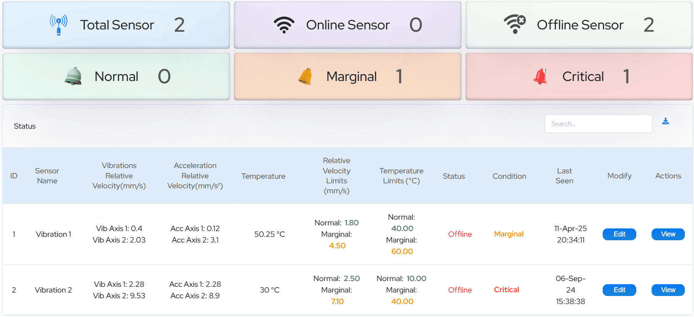Continuously monitor equipment health and detect mechanical anomalies early using our advanced Vibration Management System. With support for multi-axis vibration and acceleration readings, temperature monitoring, and condition-based alerts, it helps prevent critical equipment failure and costly downtime.
- Vibration Monitoring across X, Y, and Z Axis
- Acceleration Monitoring across X, Y, and Z Axis
- Real-time Temperature Monitoring
- Temperature Threshold Configuration
- Equipment Condition Status: Normal, Marginal, and Critical
- Set Thresholds for each vibration/acceleration axis independently
- Modify Parameters using ISO 10816 Capacity Class Standards
- Class 1 - Machines up to 15kW
- Class 2 - Machines from 15 to 75kW
- Class 3 - Machines above 75kW or 100HP
All System Monitoring
Gain a unified view of your fire safety and pump systems with the All System Monitoring dashboard. Track voltage, connectivity, power, running status, leakage trends, tank levels, diesel parameters, and pressure readings across all key equipment.
Monitor the status of:
- Sprinkler Jockey Pump
- Hydrant Jockey Pump
- Master Pump 1
- Master Pump 2
- Voltage, Power, Connectivity & Running Status for each pump
- View trend data for individual components
- Hydrant Pressure and Sprinkler Pressure trend visualization
- Water leakage report for (Today, Monthly, Total)
- Diesel Pump Parameters: Pump Capacity, Battery Voltage, Status
- Diesel Level %, Quantity, Sensor Status
- Water Tank Level Monitoring with Capacity Details
Hydrant System
Stay prepared with live hydrant health insights:
- Realtime Pressure Monitoring (kg/cm²)
- Water Leakage Detection
- Instant Alerts & Notifications
- Visual System Status (All Good / Depressurized)
- Historical Trends and Leakage Reporting
Hooter Alarm System
Critical audio-visual alerting system monitoring:
- Hooter Status: ON / OFF
- Realtime Alert Count
- Configurable Trigger Actions
- Silent/Test Mode Options
- Alert Acknowledgement
- Priority Based Notification
- Smart alerts via Email, WhatsApp, or SMS when limits are breached
- Historical data logs, trends, and downloadable reports
- Seamless integration with building and environmental systems
Fault Monitoring System
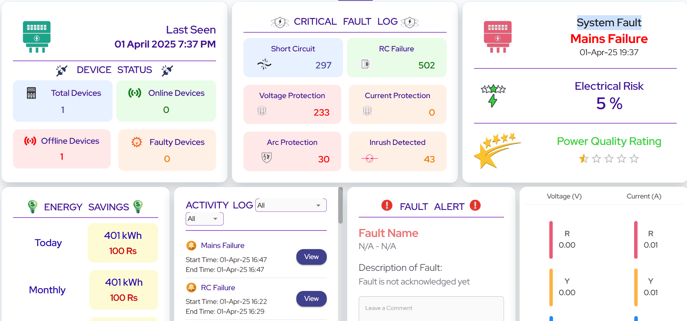Proactively identify and manage critical faults in your electrical infrastructure using our intelligent Fault Monitoring System. It helps track real-time device status, fault logs, risk percentages, and provides a complete view of power quality and historical fault activities for faster resolution.
- Real-time Device Status Monitoring: Online, Offline, and Faulty Devices Count
- Critical Fault Log Tracking: Number of fault occurrences and type-based stats
- Fault Types Monitored: Short Circuit, RC Failure, Voltage & Current Protection, Arc Protection, Inrush Detection
- System Fault Dashboard with exact fault location, timestamp, and event detail
- Electrical Risk Percentage Indicator based on fault severity and frequency
- Power Quality Rating with visual indicators for system health
- Voltage & Current Monitoring across R, Y, B Phases
- Detailed Fault Activity Log with start time, end time, and fault resolution flow
- User Interaction Enabled: Acknowledge faults and leave contextual comments per event
- Comprehensive historical insights and exportable fault reports for audit and compliance
Transformer Monitoring System
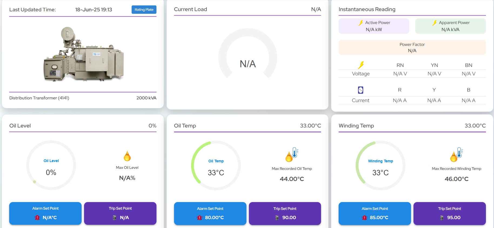Our Transformer Monitoring System delivers critical visibility into transformer health and performance. From temperature and oil levels to electrical load and safety relay indicators, it ensures round-the-clock condition-based monitoring and fault detection for preventive maintenance and operational continuity.
- Real-time monitoring of Current Load, Oil Level, Oil Temperature, and Winding Temperature
- Relay and Pressure Indicators: Buchholz Relay, OLTC Pressure Release, Main Tank & Pecon Meter Pressure Status
- Substation Monitoring: Door Status, Oil Surge Relay, and Noise Level alerts
- Instant ON/OFF status feedback for all critical protection and relay points
- Voltage and Current Phase Monitoring across R, Y, B phases
- Active Power, Apparent Power, and Power Factor tracking for load analysis
- Alerts and thresholds for abnormal rise in oil or winding temperature
Agriculture Monitoring System

Our smart Agriculture Monitoring System provides a complete view of your field operations—from pump status and crop profiles to real-time water usage and weather forecasting. Gain deep insights into soil health, water consumption, and environmental conditions to ensure optimal crop yield and sustainable practices.
- Real-time monitoring of Jockey Pump 1: Voltage, Connectivity Status, Power & Running Status
- Crop Profile Management: View planted crops with plantation date and estimated harvesting timeline
- Water Consumption Report: Today's usage, monthly trends, and totalizer consumption
- Water Level Sensor with ON/OFF indication and historical logging
- Smart Valve Position Control: Configure default positions for 0% and 100% daily water consumption
- Weather Parameters: Real-time updates for Temperature, Humidity, Solar Radiation, Wind Speed & Direction, Precipitation
- Soil Health Monitoring: Live values for Soil Temperature, Moisture, pH, Nitrogen, Phosphorus, and Potassium levels
- Daily water level visualization and alert on low/high levels
- Yield Estimation Panel: Estimated Quantity, Predicted Water Sufficiency, and Avg. Ground Water Level
- Alerts and threshold-based notifications for weather changes, water usage, and nutrient levels
FLMS Dashboard – Fleet & Fuel Monitoring
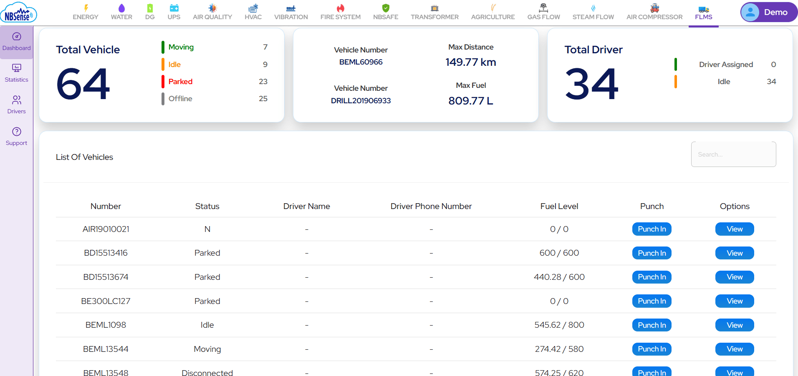 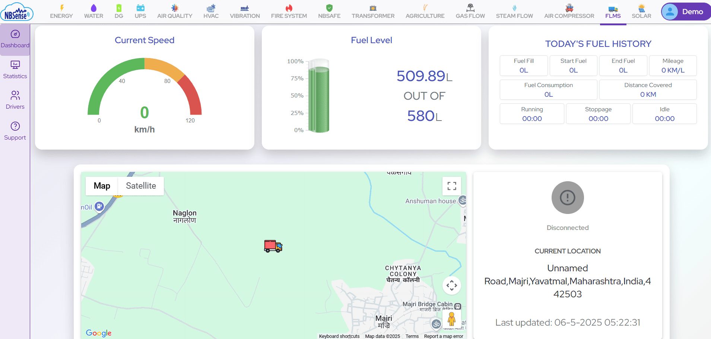Our FLMS Dashboard offers a comprehensive fleet and fuel monitoring solution designed to optimize vehicle usage, driver accountability, and fuel efficiency. From real-time GPS tracking to detailed driver punch-in/out logs, it ensures transparent and efficient fleet operations.
- Total Fleet Overview: Displays total number of vehicles in the system
- Vehicle Status Tracking: Real-time classification of vehicles as Moving, Idle, Parked, or Offline
- Driver Management: Tracks assigned drivers with punch-in and punch-out logging
- Live GPS Tracking: Real-time speed, route history, and geolocation of each vehicle
- Distance Covered: Daily, weekly, and monthly distance reports for each vehicle
- Mileage Monitoring: Fuel efficiency statistics based on distance traveled and fuel usage
- Fuel Statistics: Live data on fuel levels, refueling events, and fuel consumption trends
- Alerts and Notifications: Instant alerts on overspeeding, prolonged idling, and fuel anomalies
- Custom Reports: Exportable summaries for vehicle utilization, driver activity, and fuel performance
Gas Monitoring System
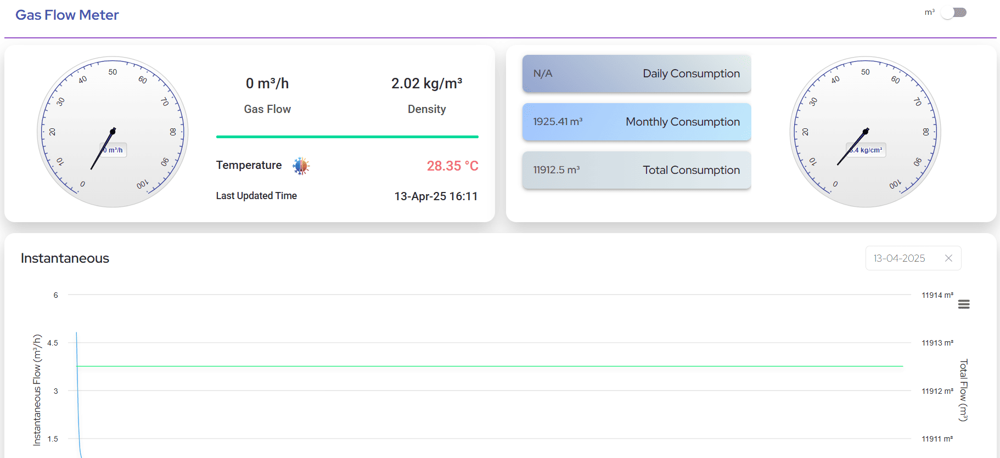Accurately track gas flow, consumption, and density in real-time with our Gas Monitoring System. Designed for safety, efficiency, and analytics, it provides complete visibility into your gas usage trends to support operational optimization and cost control.
- Real-time Gas Flow Monitoring in both kg/h and m³/h
- Density Measurement for accurate tracking and quality assessment
- Daily gas consumption tracking with trend visualization
- Monthly and cumulative total consumption reports
- Historical data access with downloadable reports
- Configurable alerts when flow exceeds defined thresholds
- Integration-ready with existing energy and safety management systems
- Helps in identifying leakages and inefficiencies in gas distribution
Steam Monitoring System
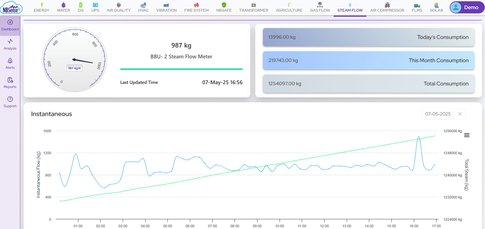Accurately track compressed air flow, consumption, in real-time with our Compressed Air Monitoring System. Designed for safety, efficiency, and analytics, it provides complete visibility into your air usage trends to support operational optimization and cost control.
- Real-time Compressed Air Flow Monitoring in cfm and tcf.
- Daily air consumption tracking with trend visualization
- Monthly and cumulative total consumption reports
- Historical data access with downloadable reports
- Configurable alerts when flow exceeds defined thresholds
- Integration-ready with existing energy and safety management systems
- Helps in identifying leakages and inefficiencies in compressed air distribution
Air Compressor Monitoring System
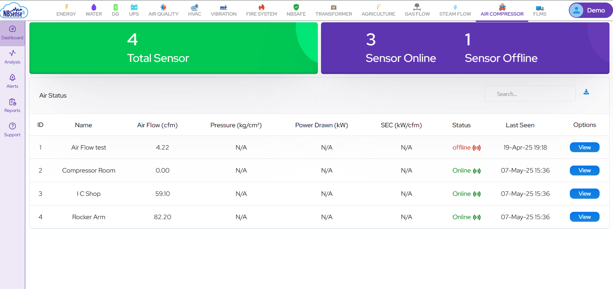 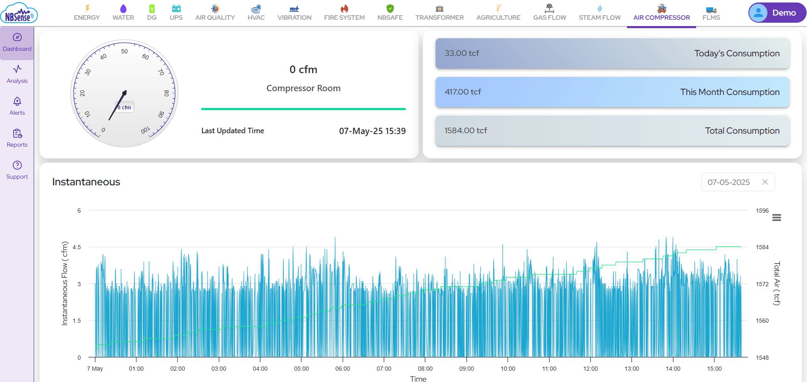Monitor your compressed air systems with precision using our Air Compressor Monitoring System. Gain real-time insights into flow and pressure performance to ensure operational efficiency and reduce energy losses across your facility.
- Real-time Air Flow Monitoring measured in CFM
- Daily, Monthly, and Totalized Flow Consumption Reporting
- Pressure Monitoring with daily and monthly maximum demand values
- Threshold-based alert system for abnormal flow or pressure conditions
- Visual dashboards to analyze trends and operational health
- Supports preventive maintenance by tracking irregular patterns
- Downloadable performance and usage reports for compliance and audits
- Seamless integration with your facility's energy management system
- Reduce air leaks, lower downtime, and boost equipment life
- Helps optimize compressor load-unload cycles and energy savings
Solar Monitoring System
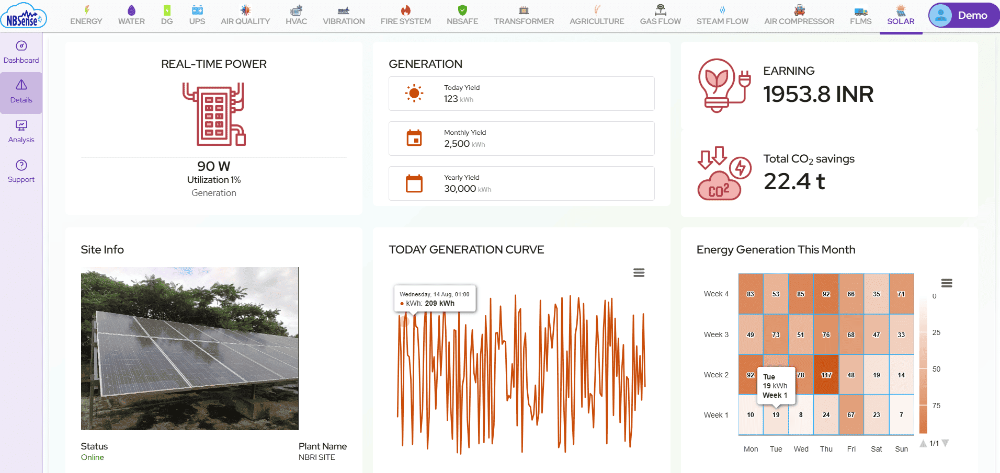Our Solar Monitoring System delivers a detailed and real-time overview of solar power generation, earnings, and utilization. Monitor environmental benefits, device performance, and energy trends across your solar infrastructure, ensuring maximum efficiency and return on investment.
- Real-time Solar Power Monitoring: Live tracking of power generation and energy utilization
- Earnings Dashboard: Calculates and displays earnings from generated solar power
- CO2 Savings: Displays total carbon emission savings based on energy produced
- Monthly Energy Generation: Month-wise summary of energy generation trends
- Device List View: Shows all connected solar devices with status (Active/Inactive), current power output, and total running time
- Detailed Device Analysis: Select individual devices and parameters for in-depth, real-time performance monitoring
- Utilization Insights: Compare generated vs. consumed power to optimize solar resource usage
- Alerts & Notifications: System alerts for device faults, performance drops, or offline status
- Custom Reports: Exportable reports covering generation, usage, device uptime, and savings